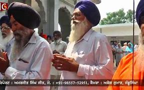

Punjab, known for its vibrant culture and rich traditions, celebrates a variety of festivals throughout the year. These festivals reflect the region's agricultural heritage, religious beliefs, and cultural diversity.
Religious Festivals
Panj Tirath Mela:
The Panj Tirath Mela is a vibrant celebration of faith, culture, and community in Punjab. It brings together people from various backgrounds to honor their spiritual heritage while promoting values of unity and inclusiveness.
The festival serves as a reminder of the importance of rivers in both the physical and spiritual landscapes of Punjab, reinforcing the connection between nature and spirituality.
Vaisakhi Mela:
Vaisakhi Mela is not just a harvest festival; it is a celebration of culture, spirituality, and community.
It brings together people from diverse backgrounds to honor their agricultural roots and spiritual heritage.
The festival embodies the spirit of togetherness, joy, and gratitude, making it one of the most cherished celebrations in Punjab.
Bandi Chhor Divas:
Bandi Chhor Divas is a significant celebration for Sikhs, symbolizing freedom, justice, and the importance of community.
It serves as a reminder of the values that Guru Hargobind Ji stood for, encouraging individuals to uphold these principles in their lives.
The festival's joyful spirit and communal activities foster a sense of unity and shared heritage among Sikhs worldwide.

Cultural Festivals
Maghi:
Maghi is a vibrant festival that brings communities together to celebrate the harvest and express gratitude for nature’s bounty.
The emphasis on communal meals, traditional music, and dance makes it a joyous occasion, reflecting the rich cultural heritage of Punjab.
Guru Nanak Jayanti:
Guru Nanak Jayanti is not just a religious observance but a celebration of the values of love, service, and unity that Guru Nanak Dev Ji propagated.
It serves as a reminder of the importance of compassion, equality, and the pursuit of truth, making it a deeply meaningful occasion for Sikhs worldwide.
Shaheedi Jor Mela:
Shaheedi Jor Mela is a poignant reminder of the sacrifices made for the principles of justice and faith in Sikhism. It fosters a sense of community, unity,
and shared heritage among Sikhs, reinforcing the importance of remembering and honoring those who laid down their lives for their beliefs.
The festival combines solemn remembrance with vibrant celebrations, making it a deeply meaningful event in the Sikh calendar.